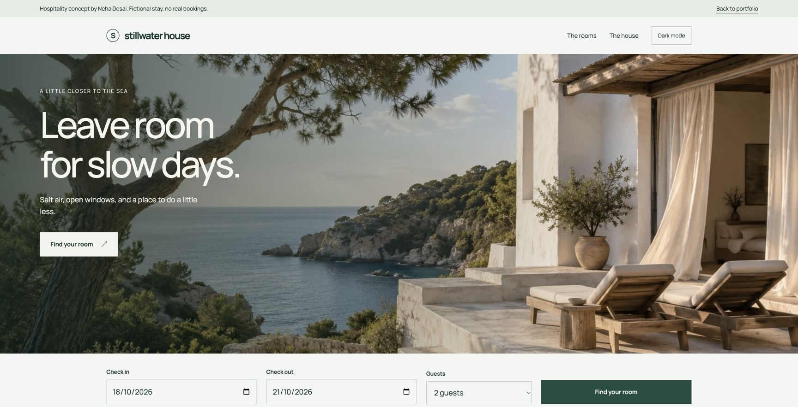
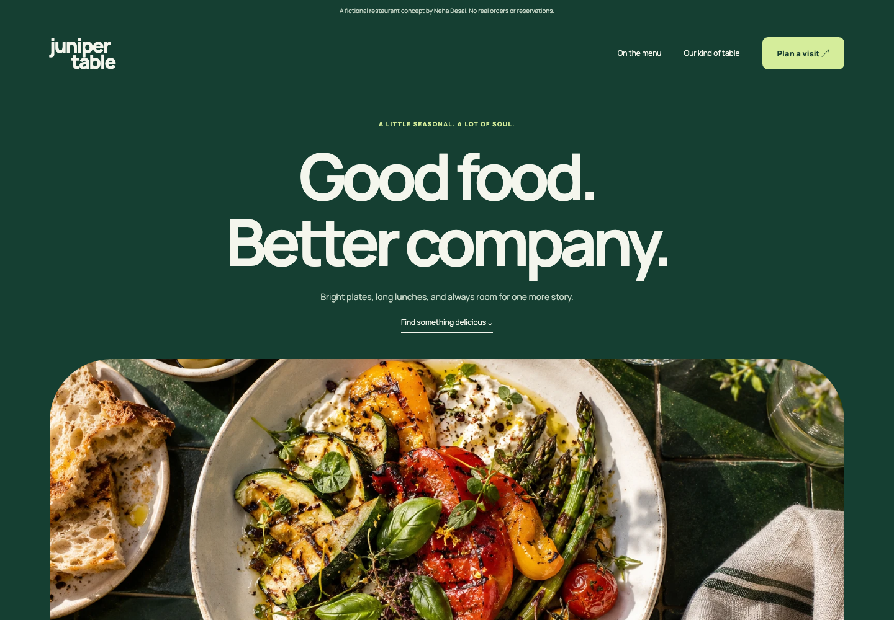
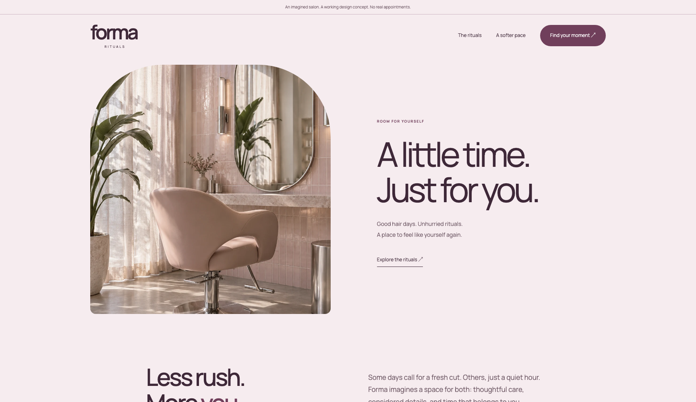
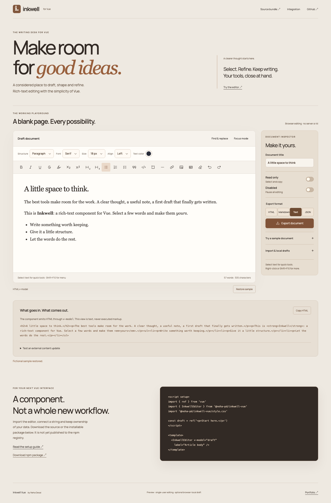
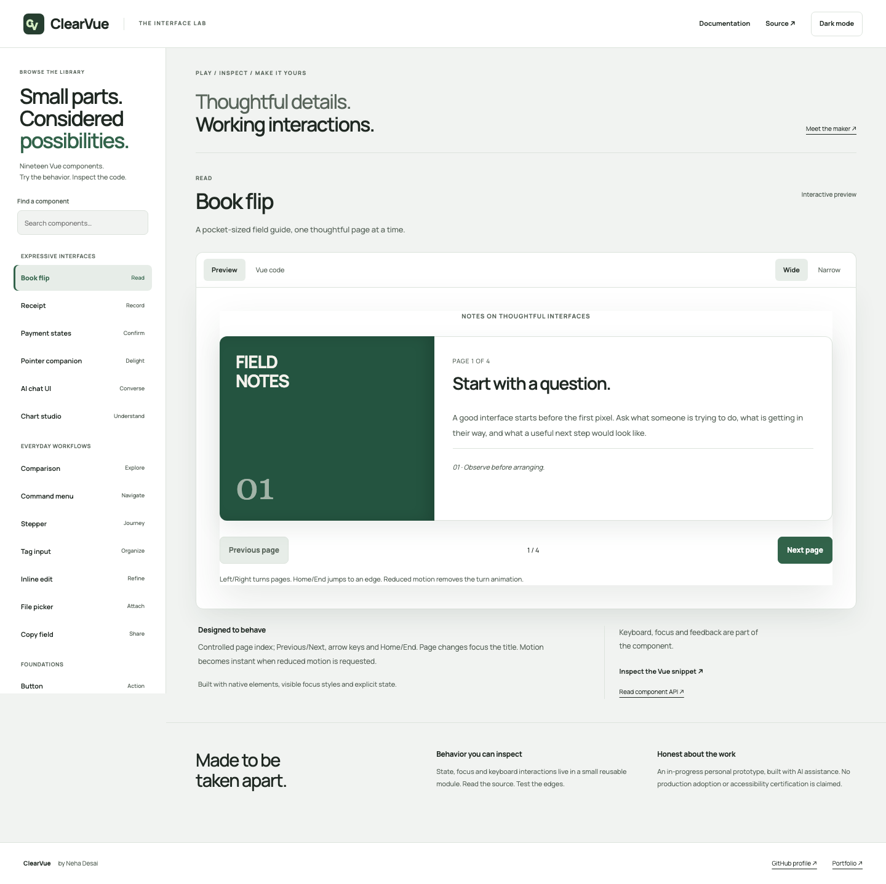

Storefront concept
Common Form
Homeware with a point of view.
Products, variants, a persistent bag and a full demo checkout.Frontend engineering & technical delivery
I’m Neha. I make complex workflows clear, useful and a little more human.
Explore the workEight years in enterprise.
Still curious about every detail.
Vue.js · JavaScript · Accessible UI
Open to roles and scoped freelance work.
Independent industry concepts
Working examples of the experiences I can help build. Explore a shop, plan a stay or find a table.
4 working concepts
Homeware with a point of view.
Products, variants, a persistent bag and a full demo checkout.
Make the stay begin on the page.
Room discovery, custom date selection and a sample stay estimate.
A good table starts with a good invitation.
A searchable menu, dietary filters and an interactive table preview.
A little time, thoughtfully yours.
Service choices, available demo times and an appointment preview.Fictional brands, original generated imagery, working frontend interactions. No real bookings, purchases or client endorsements. Built with AI assistance.
A beautiful screen is a beginning.
What happens next is the work.
A cart that makes sense. A form that works with a keyboard. A component that a team can use again.
Explore the product experimentsThe working playground
Personal, AI-assisted prototypes you can actually use. Clear about what works today and what is still being explored.

A Vue rich-text editor with floating tools, tables, images, local drafts and document exports.
Editor preview · single-user
Nineteen Vue components, including page flips, an AI-chat interface and six chart types.
Component preview · simulated chat & payments
Local keyword retrieval with exact passages and exportable evidence bundles. AI synthesis is planned.
Working prototype · no AI-generated answers
Compare briefs and requests, make scope decisions and export a change-request draft.
Working prototype · local rules, not AI
Search community needs, filter causes and make browser-local demo pledges.
Community prototype · fictional needsSelected professional work
Support operations, global facilities and manufacturing workflows. The work is technical. The starting point is always the person using it.
Core – Apple advisor-support platform
The application advisors use to log customer tickets and issues. My work connects user friction, frontend engineering and the delivery plan.
Develop and maintain the advisor interface, turn improvement areas into features, and coordinate integration with backend teams.
I use Radar reports to understand friction, help prioritize the backlog, define frontend/API requirements and facilitate Agile ceremonies for a cross-functional team of 7+.
Hands-on engineering coupled with product judgment: clarifying a problem, aligning people around it and taking a feature through delivery.
40%improvement in sprint velocity
VIMS & DMS · Cognizant / Apple client account
October 2023 – March 2025
I architected responsive Vue 3 interfaces with Vuex and Vue Router, translated stakeholder requirements into technical specifications and served as a frontend point of contact.
Reusable patterns, code-quality standards and delivery governance helped improve sprint velocity by 40% on this workstream. This is a delivery-process outcome, not a claim about application speed.
15%reduction in initial load times
NMS & PCM · Capgemini / GE Aviation client account
July 2018 – October 2021
I built frontend components and integrations for nonconformance and product-change management workflows.
Lazy loading, asset compression and caching reduced initial load times by 15%. Alongside performance work, I contributed reusable UI patterns, delivery practices and mentoring for junior engineers.
Professional case studies describe my own contributions. Internal client screens, code and confidential implementation details are not reproduced.
Other things I’m building
Separate from my client work, these projects explore practical everyday problems.
A little more aware.
A little more active.
Meal logging, routines and progress in one place, with a companion called Kin. An Expo and React Native project with a web preview and an Android release.
Offline food search, optional online chat and health integrations explore how a daily tool can be helpful without getting in the way.
Early personal project. Food values are estimates; device integrations depend on compatible hardware and permissions. The free-hosted demo may take a moment to wake up.


A group expense splitter that makes shared costs easier to follow, with member balances, suggested settlements and PDF exports.
View the sourceA searchable frontend knowledge base with topic navigation, entry creation and light/dark themes. Built around finding the right information.
View the source
My career started with frontend engineering at Capgemini in 2018. Today, at Cognizant, I combine hands-on Vue development with architecture, stakeholder alignment and technical delivery on the Apple client account.
Across support, facilities and television applications, I have worked from wireframes through implementation, built reusable components and helped teams agree on how systems connect.
Accessibility is part of that engineering work: keyboard navigation, focus management, ARIA and screen-reader testing. I led work across four client-account applications to meet Apple’s internal accessibility certification standards.
Cognizant · Apple client account
Capgemini · GE Aviation client account
Master of Computer Application
Annamalai University · 2019–2021
Bachelor of Computer Application
KLE’s RLSI · 2015–2018
Vue interfaces, reusable components, API integration and performance improvements in an existing codebase.
Turning requirements into priorities, aligning API contracts and helping teams move a feature through delivery.
A responsive website or a focused frontend improvement, with clear scope and a delivery plan we agree together.
For a role, a project or a useful conversation
Based in Bengaluru, India. Open to remote engagements that allow work from India, and international relocation with visa sponsorship.